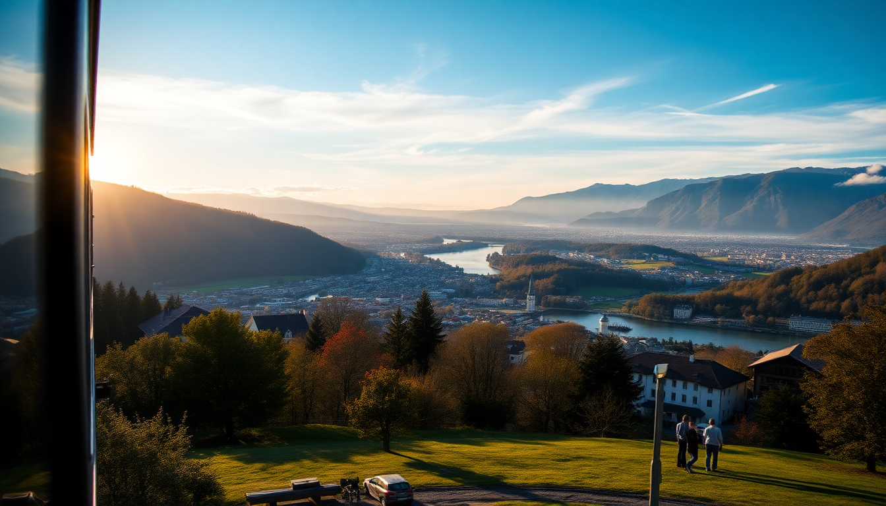

Switzerland by Rail: Swiss Travel Pass & Scenic Train Routes

I landed in Zurich with a vague plan and a Swiss Travel Pass loaded on my phone. Within three hours I was on a train headed to Lucerne, watching the lake appear through the tunnel. By the end of the trip, I’d crossed the country four times, taken three scenic trains, and spent exactly zero minutes in a rental car. Here’s what actually worked.
What is the Swiss Travel Pass and is it worth it?
The Swiss Travel Pass is a flat-rate rail pass that covers unlimited train, bus, and boat travel on the Swiss Travel System network for consecutive days (3, 4, 6, 8, or 15 days). It also includes free entry to over 500 museums and 50% off most mountain railways like Jungfraujoch and Gornergrat.
I bought the 8-day pass for CHF 440 (second class). I did the math: a single round-trip from Zurich to Geneva costs around CHF 100. Add in a day trip to Interlaken and a ride on the GoldenPass line, and the pass paid for itself by day four. The real win was not having to buy tickets at station kiosks every morning.
One catch: the pass does not cover seat reservations on scenic trains (usually CHF 30-50 extra). I’d still buy it. Just budget for those reservations separately.
How do the scenic trains actually compare?
I rode three of the big four: the GoldenPass Line, the Bernina Express, and the Glacier Express. I skipped the Gotthard Panorama Express because I ran out of days.
- GoldenPass Line (Montreux–Interlaken): My favorite. The leg from Montreux to Zweisimmen hugs Lake Geneva then climbs through vineyards and alpine pastures. The windows open, so you can stick your head out for photos. Reserve a seat on the right side heading east.
- Bernina Express (Chur–Tirano): Wildest elevation change — from glaciers to palm trees in two hours. The open-air section near Alp Grüm is the highlight. Book the panoramic car; the regular regional train is cheaper but the views aren’t as good.
- Glacier Express (Zermatt–St. Moritz): Overrated. It’s comfortable and the food in the dining car is solid, but you’re behind glass the whole time. The regular InterRegio trains on the same route cost less and let you open windows. I’d skip the reservation fee unless you really want the meal service.
What should I do in Zurich without wasting time?
Zurich is a gateway, not a destination. I spent one night there and that was enough.
- Niederdorf (Old Town): The main strip for bars and food. We ate at Zeughauskeller, a beer hall in a former armory. The sausages are fine, the atmosphere is loud. Good for a quick dinner.
- Lindenhofplatz: A quiet square above the river with chess tables and a view of the Grossmünster. No crowds. Bring a coffee from Vicafe around the corner.
- Kunsthaus Zürich: If you have the pass, entry is free. The Giacometti collection is worth an hour. Skip the modern wing unless you’re a big fan of concrete floors.
- Zurich Hauptbahnhof (main station): You’ll pass through it anyway. The food hall downstairs has decent takeaway sushi and the Migros supermarket for cheap snacks.
Is Lucerne as touristy as people say?
Yes, the Chapel Bridge area is packed from 10am to 4pm. But the city still works if you time it right.
I stayed at Hotel des Balances, which sits right on the Reuss River with a direct view of the bridge. The rooms are small but the location lets you walk everywhere. We had dinner at Wirtshaus Galliker, a no-fuss spot with veal Zürich-style and rösti. Locals eat there. No English menu, which I took as a good sign.
For the mountain views, take the boat from Lucerne to Vitznau (covered by the pass), then ride the cogwheel train up to Rigi Kulm. The panorama of the Alps and lakes is the real deal. Go early — the 8:20 boat is empty, the 10:20 is shoulder-to-shoulder with tour groups.
How do I base myself in Interlaken and use it for day trips?
Interlaken is the most practical hub for the Jungfrau region. It’s not pretty — think strip of souvenir shops and hotels — but the trains and boats radiate from here.
I stayed at Hotel Interlaken, a classic property with a garden. It’s a five-minute walk from Interlaken Ost station. From there:
- Jungfraujoch (Top of Europe): Take the train to Kleine Scheidegg, then up to the summit. The pass gives 25% off the ticket. It’s expensive even with the discount (about CHF 150). The view from the Sphinx Terrace is incredible, but the indoor museum part feels like an airport terminal.
- Lauterbrunnen Valley: Free with the pass. Walk from the station to Staubbach Falls, then hike to Mürren for lunch. The path is flat and takes about 90 minutes.
- Harder Kulm: The funicular from Interlaken costs half price with the pass. The viewing platform juts out over the valley. Go at sunset for empty crowds.
One warning: the Schilthorn (Piz Gloria) is cheaper than Jungfraujoch and has a better restaurant. The revolving terrace served a decent cheese fondue. I preferred it.
What’s the best way to see Geneva in a day?
Geneva feels more like a French city than a Swiss one. I used it as a stopover before flying out. One full day is enough.
- Jet d’Eau: The fountain in Lake Geneva. You’ll see it from everywhere. Walk along the Quai Gustave-Ador for the best angle.
- Old Town (Vieille Ville): We had lunch at Café du Soleil in the Carouge neighborhood — they serve a fondue that’s half Gruyère, half Vacherin. Order a bottle of Fendant wine to cut the richness.
- CERN: Free entry but you need to book a slot online weeks in advance. The guided tour of the particle accelerator is fascinating if you’re into science. If not, skip it.
- Pâquis Baths: A public swimming area on the lake. Entry is CHF 2. The sauna is extra but worth it in winter.
FAQ
Can I use the Swiss Travel Pass for the Bernina Express without a reservation? No. The Bernina Express requires a seat reservation (CHF 33 in summer, CHF 16 in winter). But you can ride the same route on the regular regional train (Rhatische Bahn) with the pass alone — no reservation needed. The views are identical, just without the panoramic windows.
Is first class worth the extra cost on the Swiss Travel Pass? I bought second class and never regretted it. The trains are clean and rarely full. First class gets you wider seats and a quieter carriage, but the windows are the same size. Save the money for a mountain excursion.
What’s the best way to buy the Swiss Travel Pass before arriving? Buy it online from the Swiss Travel System official site and pick it up at Zurich or Geneva airport station. The staff at the SBB counter will activate it for you. Don’t buy from third-party resellers — they charge the same price but add shipping fees.
Conclusion
- The Swiss Travel Pass pays for itself if you take three or more long-distance trips in a week.
- The GoldenPass Line is the best scenic train for value and views. The Glacier Express is overpriced.
- Lucerne and Interlaken are crowded but work as bases if you wake up early and eat outside the main squares.
- Zurich is a transit hub, not a vacation spot. Geneva is worth a day.
- Download the SBB Mobile app for real-time schedules. Buy seat reservations for scenic trains at least a day ahead.